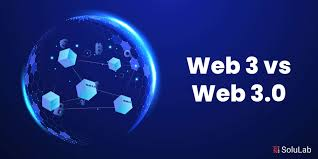

Web 3.0 geralmente é entendida de duas formas que se complementam: a Web Semântica, idealizada por Tim Berners-Lee para que máquinas compreendam dados e interajam, e a Web descentralizada, construída com blockchain e contratos inteligentes para devolver controle ao usuário. A era da Web 3.0, entre 2010 e 2020, marca a transição para sistemas que utilizam metadados (OWL, RDF, RDFS) e inteligência artificial para organizar Big Data e entregar experiências personalizadas conforme o contexto do usuário. Emociona com agentes inteligentes capazes de interpretar comandos em linguagem natural, gerar recomendações personalizadas e realizar transações autônomas. Além disso, a Web 3.0 propõe modelos econômicos baseados em tecnologia distribuída (criptomoedas, NFTs, DAOs e DeFi) tornando possível a governança descentralizada e a propriedade do próprio dado pelo usuário.
